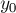
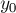
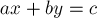

MAXimal
добавлено: 10 Jun 2008 18:15
редактировано: 26 Apr 2012 1:46
Содержание [скрыть]
Линейные диофантовы уравнения с двумя переменными
Диофантово уравнение с двумя неизвестными имеет вид:
где  — заданные целые числа,
— заданные целые числа,  и
и  — неизвестные целые числа.
— неизвестные целые числа.
Ниже рассматриваются несколько классических задач на эти уравнения: нахождение любого решения, получение всех решений, нахождение количества решений и сами решения в определённом отрезке, нахождение решения с наименьшей суммой неизвестных.
Вырожденный случай
Один вырожденный случай мы сразу исключим из рассмотрения: когда . В этом случае, понятно, уравнение имеет либо бесконечно много произвольных решений, либо же не имеет решений вовсе (в зависимости от того, или нет).
Нахождение одного решения
Найти одно из решений диофантова уравнения с двумя неизвестными можно с помощью Расширенного алгоритма Евклида. Предположим сначала, что числа  и
и  неотрицательны.
неотрицательны.
Расширенный алгоритм Евклида по заданным неотрицательным числам и находит их наибольший общий делитель  , а также такие коэффициенты и , что:
, а также такие коэффициенты и , что:
Утверждается, что если  делится на
делится на  , то диофантово уравнение имеет решение; в противном случае диофантово уравнение решений не имеет. Доказательство следует из очевидного факта, что линейная комбинация двух чисел по-прежнему должна делиться на их общий делитель.
, то диофантово уравнение имеет решение; в противном случае диофантово уравнение решений не имеет. Доказательство следует из очевидного факта, что линейная комбинация двух чисел по-прежнему должна делиться на их общий делитель.
Предположим, что делится на , тогда, очевидно, выполняется:
т.е. одним из решений диофантова уравнения являются числа:
Мы описали решение в случае, когда числа и неотрицательны. Если же одно из них или они оба отрицательны, то можно поступить таким образом: взять их по модулю и применить к ним алгоритм Евклида, как было описано выше, а затем изменить знак найденных  и  в соответствии с настоящим знаком чисел и соответственно.
и  в соответствии с настоящим знаком чисел и соответственно.
Реализация (напомним, здесь мы считаем, что входные данные  недопустимы):
недопустимы):
int gcd (int a, int b, int & x, int & y) { if (a == 0) { x = 0; y = 1; return b; } int x1, y1; int d = gcd (b%a, a, x1, y1); x = y1 - (b / a) * x1; y = x1; return d; } bool find_any_solution (int a, int b, int c, int & x0, int & y0, int & g) { g = gcd (abs(a), abs(b), x0, y0); if (c % g != 0) return false; x0 *= c / g; y0 *= c / g; if (a < 0) x0 *= -1; if (b < 0) y0 *= -1; return true; }
Получение всех решений
Покажем, как получить все остальные решения (а их бесконечное множество) диофантова уравнения, зная одно из решений .
Итак, пусть , а числа удовлетворяют условию:
Тогда заметим, что, прибавив к число и одновременно отняв от , мы не нарушим равенства:
Очевидно, что этот процесс можно повторять сколько угодно, т.е. все числа вида:
являются решениями диофантова уравнения.
Более того, только числа такого вида и являются решениями, т.е. мы описали множество всех решений диофантова уравнения (оно получилось бесконечным, если не наложено дополнительных условий).
Нахождение количества решений и сами решения в заданном отрезке
Пусть даны два отрезка и ![[min_y;max_y]](../tex2png/cache/73accb23bb75d5e28568e4690536f8f7.png) , и требуется найти количество решений
, и требуется найти количество решений  диофантова уравнения, лежащих в данных отрезках соответственно.
диофантова уравнения, лежащих в данных отрезках соответственно.
Заметим, что если одно из чисел  равно нулю, то задача имеет не больше одного решения, поэтому эти случаи мы в данном разделе исключаем из рассмотрения.
равно нулю, то задача имеет не больше одного решения, поэтому эти случаи мы в данном разделе исключаем из рассмотрения.
Сначала найдём решение с минимальным подходящим , т.е. . Для этого сначала найдём любое решение диофантова уравнения (см. пункт 1). Затем получим из него решение с наименьшим — для этого воспользуемся процедурой, описанной в предыдущем пункте, и будем уменьшать/увеличивать , пока оно не окажется , и при этом минимальным. Это можно сделать за  , посчитав, с каким коэффициентом нужно применить это преобразование, чтобы получить минимальное число, большее либо равное . Обозначим найденный через .
, посчитав, с каким коэффициентом нужно применить это преобразование, чтобы получить минимальное число, большее либо равное . Обозначим найденный через .
Аналогичным образом можно найти и решение с максимальным подходящим , т.е. .
Далее перейдём к удовлетворению ограничений на , т.е. к рассмотрению отрезка . Способом, описанным выше, найдём решение с минимальным , а также решение с максимальным . Обозначим -коэффициенты этих решений через и соответственно.
Пересечём отрезки и ; обозначим получившийся отрезок через . Утверждается, что любое решение, у которого -коэффициент лежит в — любое такое решение является подходящим. (Это верно в силу построения этого отрезка: сначала мы отдельно удовлетворили ограничения на и , получив два отрезка, а затем пересекли их, получив область, в которой удовлетворяются оба условия.)
Таким образом, количество решений будет равняться длине этого отрезка, делённой на (поскольку -коэффициент может изменяться только на ), и плюс один.
Приведём реализацию (она получилась достаточно сложной, поскольку требуется аккуратно рассматривать случаи положительных и отрицательных коэффициентов и ):
void shift_solution (int & x, int & y, int a, int b, int cnt) { x += cnt * b; y -= cnt * a; } int find_all_solutions (int a, int b, int c, int minx, int maxx, int miny, int maxy) { int x, y, g; if (! find_any_solution (a, b, c, x, y, g)) return 0; a /= g; b /= g; int sign_a = a>0 ? +1 : -1; int sign_b = b>0 ? +1 : -1; shift_solution (x, y, a, b, (minx - x) / b); if (x < minx) shift_solution (x, y, a, b, sign_b); if (x > maxx) return 0; int lx1 = x; shift_solution (x, y, a, b, (maxx - x) / b); if (x > maxx) shift_solution (x, y, a, b, -sign_b); int rx1 = x; shift_solution (x, y, a, b, - (miny - y) / a); if (y < miny) shift_solution (x, y, a, b, -sign_a); if (y > maxy) return 0; int lx2 = x; shift_solution (x, y, a, b, - (maxy - y) / a); if (y > maxy) shift_solution (x, y, a, b, sign_a); int rx2 = x; if (lx2 > rx2) swap (lx2, rx2); int lx = max (lx1, lx2); int rx = min (rx1, rx2); return (rx - lx) / abs(b) + 1; }
Также нетрудно добавить к этой реализации вывод всех найденных решений: для этого достаточно перебрать в отрезке с шагом , найдя для каждого из них соответствующий непосредственно из уравнения .
Нахождение решения в заданном отрезке с наименьшей суммой x+y
Здесь на и на также должны быть наложены какие-либо ограничения, иначе ответом практически всегда будет минус бесконечность.
Идея решения такая же, как и в предыдущем пункте: сначала находим любое решение диофантова уравнения, а затем, применяя описанную в предыдущем пункте процедуру, придём к наилучшему решению.
Действительно, мы имеем право выполнить следующее преобразование (см. предыдущий пункт):
Заметим, что при этом сумма  меняется следующим образом:
меняется следующим образом:
Т.е. если , то нужно выбрать как можно меньшее значение  , если b">, то нужно выбрать как можно большее значение .
, если b">, то нужно выбрать как можно большее значение .
Если , то мы никак не сможем улучшить решение, — все решения будут обладать одной и той же суммой.
Задачи в online judges
Список задач, которые можно сдать на тему диофантовых уравнений с двумя неизвестными: